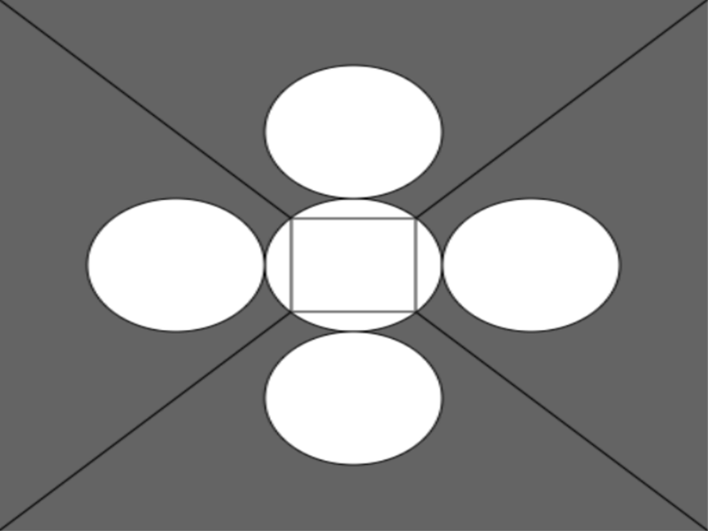
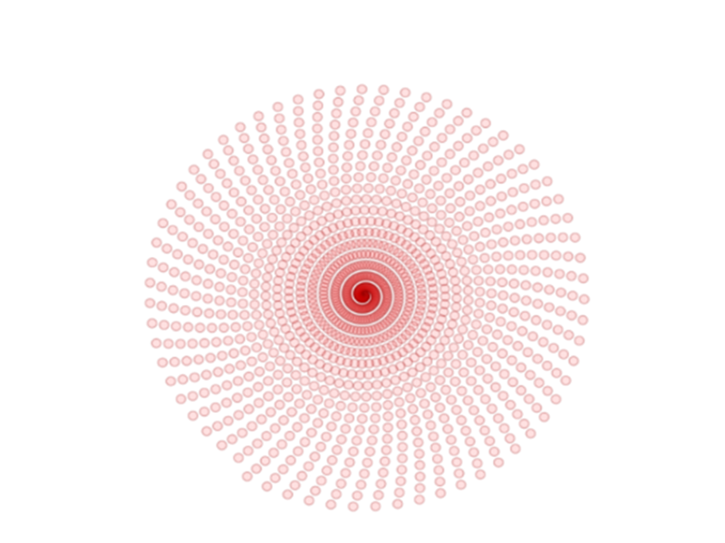
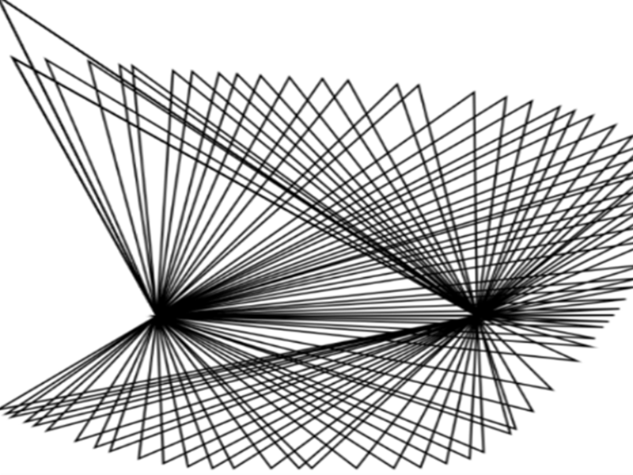

Projects
Συνταγή για banana pancakes, μέσω ψευδοκώδικα.
Μία πιο δημιουργική προσέγγιση στην έννοια του ψευδοκώδικα. Στο τέλος σημασία έχει να τρώγεται!

Σύνθεση με κύκλους και τετράγωνο.
Μία συμμετρική σύνθεση με γεωμετρικά σχήματα, κύκλους, τετράγωνα, βασισμένη σε απλές εντολές της p5.js.

Τυχαία σύνθεση με χρωματιστούς, διαφανείς κύκλους
Άπειροι κύκλοι σε διαφορετικά σημεία και χρώματα, εμφανίζονται τυχαία σχηματίζοντας ένα χρωματιστό μοτίβο μέσω βασικών εντολών της p5.js.

Σπείρα με κύκλους
Μικρά κυκλάκια που τοποθετούνται με μια γωνιακή και ακτινική μορφή, ώστε να σχηματίσουν μια απλή σπείρα, μέσω απλών εντολών του p5.js.

Τρίγωνο με ελεγχόμενη κορυφή, εμπνευσμένο από το έργο του Sol LeWitt
Η κορυφή του τριγώνου κινείται μαζί με το ποντίκι, δημιουργώντας συνεχώς νέα σχήματα και μορφές, μέσω της p5.js.
Εργασία 6-έρχεται σύντομα
©Έρικα Βλίττη 2025